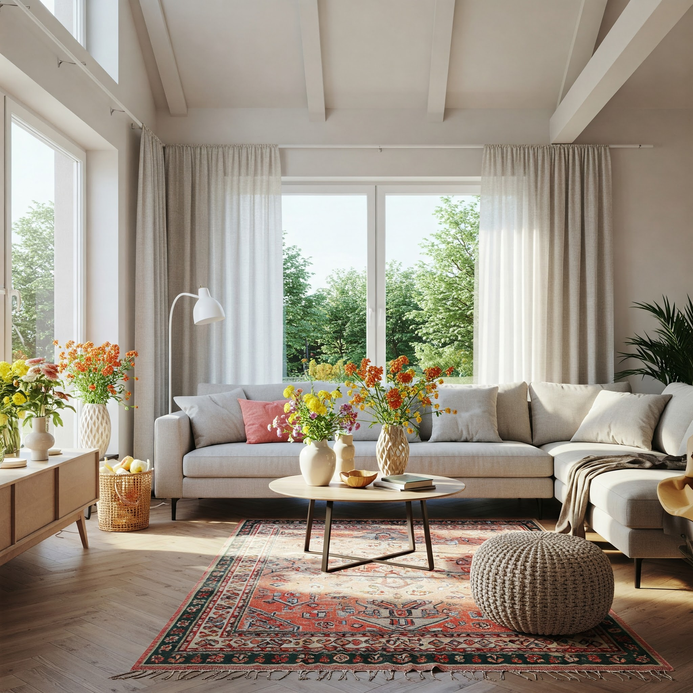
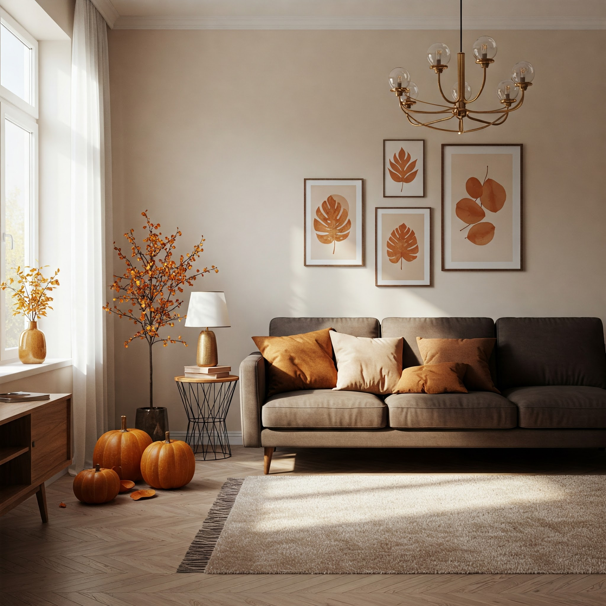
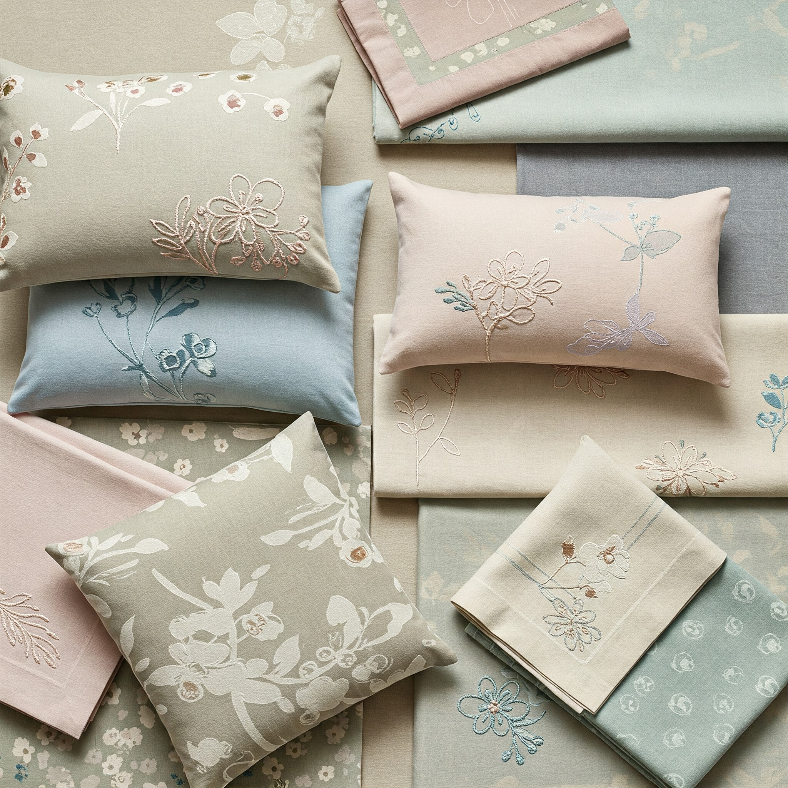

Evlerimiz, yıl boyunca değişen mevsimler ve özel günlerle birlikte yeniden hayat bulabilir. Mevsimsel dekorasyonlar ve özel günlere özel dokunuşlar, yaşam alanlarımıza taze bir nefes getirir. Bu yazımızda, her mevsim ve özel günler için ev dekorasyonu fikirlerini sizlerle paylaşacağız.
Yaz Ayları İçin Dekorasyon Fikirleri
Yaz ayları, evlerimizde ferahlık ve canlılık hissi yaratmanın tam zamanıdır. Açık renkler, doğal dokular ve hafif kumaşlar yaz dekorasyonunun vazgeçilmezleridir.
Yaz Banyoları İçin Ferah Paspaslar
Banyo alanları, yaz aylarında özellikle ferah ve canlı olmalıdır. Açık mavi, turkuaz veya deniz yeşili tonlarındaki paspaslar, banyonuza deniz esintisi katabilir. Pamuklu veya keten gibi doğal malzemelerden yapılmış paspaslar, nem emici özellikleriyle yaz ayları için idealdir.
Desenlerde ise deniz kabukları, mercan veya dalga motifleri tercih ederek, yaz temasını güçlendirebilirsiniz. Ayrıca, açık renkli ve hafif dokuya sahip paspaslar, banyonuzu daha geniş ve aydınlık gösterir.
Yaz banyoları için seçeceğiniz paspaslar, sadece görsel açıdan değil, işlevsellik açısından da önemlidir. Hızlı kuruyan ve ayak altında ferahlık hissi veren malzemeler tercih edin.
Yazın Renkleriyle Evinizi Canlandırın
Yaz aylarında evinizdeki tekstil ürünlerini açık ve canlı renklerle değiştirerek, mevsimin enerjisini içeri taşıyabilirsiniz. Turkuaz, mercan, limon sarısı veya açık yeşil tonları, yaz dekorasyonu için mükemmel seçimlerdir.
- Koltuk yastıklarını açık renkli ve desenli modellerle değiştirin
- Perdelerinizi daha hafif ve hava geçiren kumaşlarla yenileyin
- Masa örtüleri ve peçetelerde canlı renkler ve çiçek desenleri tercih edin
- Yatak örtülerini pamuklu veya keten gibi serin tutan kumaşlarla değiştirin
- Halılarınızı yazlık, daha ince ve açık renkli modellerle değiştirmeyi düşünün
Sonbahar Dekorasyonu
Sonbahar ayları, sıcak renkler ve doğanın değişen tonlarıyla ev dekorasyonu için ilham kaynağıdır. Turuncu, bordo, kahverengi ve hardal sarısı tonları, sonbahar dekorasyonunun vazgeçilmezleridir.
Kadife ve yün gibi daha sıcak tutan kumaşlar, sonbahar aylarında evlerimizi daha konforlu hale getirir. Koltuk şalları, kalın battaniyeler ve yastıklar, sonbahar dekorasyonunda önemli rol oynar.
Kış İçin Sıcak ve Davetkar Ev Dekorasyonu
Kış aylarında evimiz, dışarıdaki soğuğa karşı sıcak bir sığınak olmalıdır. Koyu renkler, kalın dokular ve sıcak aydınlatma, kış dekorasyonunun temel unsurlarıdır.
Kırmızı, bordo, koyu yeşil ve lacivert gibi koyu ve sıcak renkler, kış dekorasyonunda ön plana çıkar. Yün, kadife ve peluş gibi kalın dokulu kumaşlar, evinize sıcaklık katar.
Kış Gecelerini Aydınlatan Dokunuşlar
Kış aylarında doğal ışığın azalmasıyla, yapay aydınlatma daha da önemli hale gelir. Sıcak ışık veren lambalar, mumlar ve ışık zincirleri, kış gecelerinde evinizi daha davetkar hale getirebilir.
İlkbahar Tazeliği
İlkbahar, yeniden doğuş ve tazelik demektir. Pastel renkler, çiçek desenleri ve hafif kumaşlar, ilkbahar dekorasyonunun vazgeçilmezleridir.
Açık yeşil, lavanta, açık pembe ve açık mavi gibi pastel tonlar, ilkbahar dekorasyonunda tercih edilir. Çiçek desenli tekstil ürünleri, baharın tazeliğini evinize taşır.
Özel Günler İçin Dekorasyon Fikirleri
Özel günler ve bayramlarda, evimizin dekorasyonunu değiştirmek, kutlama ruhunu güçlendirir ve atmosfere katkıda bulunur.
Dini Bayramlar
Ramazan ve Kurban Bayramı gibi dini bayramlarda, geleneksel motiflerle bezeli tekstil ürünleri, ev dekorasyonuna anlamlı bir dokunuş katar. Özel işlemeli masa örtüleri, yastıklar ve perdeler, bayram atmosferini yansıtabilir.
Yılbaşı Dekorasyonu
Yılbaşı dekorasyonunda, kırmızı ve yeşil renklerin hakim olduğu tekstil ürünleri tercih edilebilir. Yılbaşı temalı yastıklar, battaniyeler ve masa örtüleri, yeni yıl heyecanını evinize taşır.
Özel günlerde, sadece büyük değişiklikler yapmak zorunda değilsiniz. Küçük dokunuşlar, aksesuarlar ve tekstil ürünleriyle de atmosferi tamamen değiştirebilirsiniz.
Mevsimsel Dekorasyonda Sürdürülebilirlik
Mevsimsel dekorasyon değişikliklerinde, sürdürülebilirlik ilkesini göz önünde bulundurmak önemlidir. Her mevsim için tamamen yeni ürünler almak yerine, mevcut ürünlerinizi farklı şekillerde kullanabilir veya küçük dokunuşlarla değişiklik yaratabilirsiniz.
- Tek yönlü yastık kılıfları yerine, çift taraflı kılıflar tercih edin; bir tarafı yaz, diğer tarafı kış için olabilir
- Kaliteli ve dayanıklı tekstil ürünleri seçerek, uzun yıllar kullanabilirsiniz
- Küçük aksesuarlarla büyük değişiklikler yaratın; örneğin, mevsime uygun yastık kılıfları veya masa örtüleri
- İkinci el mağazaları ve vintage dükkanlarını keşfedin; benzersiz ve sürdürülebilir parçalar bulabilirsiniz
Mevsimsel Koleksiyonumuzla Evinizi Yenileyin!
Ev Tekstil'in mevsimsel koleksiyonuyla, yaşam alanlarınıza taze bir nefes getirin. Her mevsim için özel tasarlanmış tekstil ürünlerimiz, evinizi yenilemenin en kolay ve şık yolu.
Koleksiyonu KeşfetSonuç
Mevsimsel dekorasyon değişiklikleri, yaşam alanlarımızı canlı ve güncel tutmanın harika bir yoludur. Doğanın kendi ritmini takip ederek, evinizi her mevsim yeniden tasarlayabilir ve bu değişikliklerin getirdiği tazelikten faydalanabilirsiniz.
Büyük değişiklikler yapmadan, küçük tekstil dokunuşlarıyla bile evinizin atmosferini tamamen değiştirebilirsiniz. Mevsimsel dekorasyonlar ve özel günlere özel dokunuşlar, yaşam alanlarınıza karakter ve dinamizm katar.